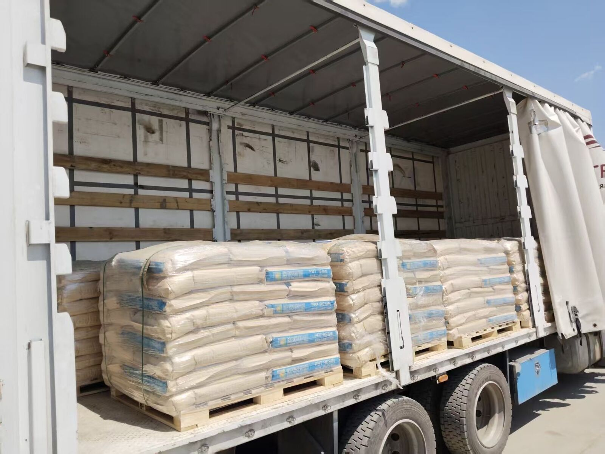
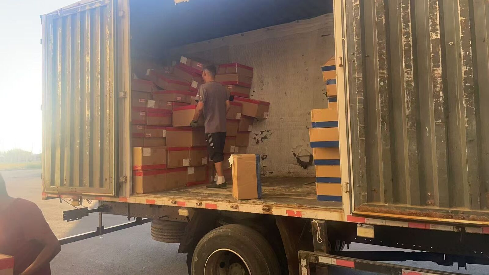
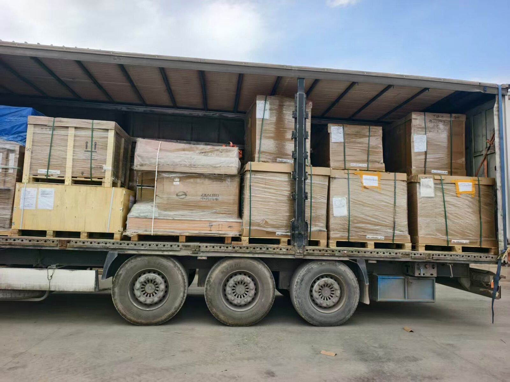

LOG
دفتر حرکت: سوابق واقعی بارهای چین به ایران
این صفحه بخشی از بارهای حرکتکردهٔ این خط را ثبت میکند. فقط آنچه اتفاق افتاده نوشته میشود: تاریخ، انبار تجمیع، نوع کالا، خط خروج، گمرک مقصد، و اینکه بار با کامیون مستقیم رفته یا با تعویض بار. وقتی باری تحویل شد، تعداد روز واقعی از مرز ووچیا هم به همان رکورد اضافه میشود.
- شمارش روزها از مرز ووچیا آغاز میشود؛ مسیر داخلی چین تا ووچیا معمولاً ظرف ۷ روز است و جداگانه حساب میشود
- فقط دو مقصد اعلامی در این دفتر میآید: گمرک مشهد و تهران
- نام صاحب کالا، برند کالا و شماره ارسال منتشر نمیشود — اطلاعات مشتری نزد ما میماند
- تعداد کل و تعداد دستگاه اعلام نمیشود؛ آنچه میتوان گفت این است که دهها محموله در طول سال در مسیر است و حجم ماهانه در حد صدهاست

سوابق
-
خارج شد
تجمیع در ایوو. کالای عمومی، خط ووچیا، کامیون مستقیم (یک تعویض بار در بخارا)، به گمرک غرب تهران.

-
خارج شد
تجمیع در ایوو. خودرو، خط ووچیا، کامیون مستقیم (یک تعویض بار در بخارا)، به گمرک غرب تهران.
-
خارج شد
تجمیع در ایوو. ماشینآلات، خط ووچیا، کامیون مستقیم (یک تعویض بار در بخارا)، به گمرک غرب تهران.

این دفتر را چطور بخوانید
روزها از ووچیا شمرده میشود. بازههای اعلامی این خط چنین است: کامیون مستقیم در حال حاضر ۲۱ تا ۲۳ روز تا تهران و ۱۸ تا ۲۱ روز تا مشهد؛ کامیون تعویض بار به ترتیب ۲۶ تا ۳۰ و ۲۴ تا ۲۸ روز. همهٔ اینها از مرز ووچیا اندازهگیری میشود و مسیر داخلی را در بر نمیگیرد. یک محمولهٔ منفرد ممکن است بالاتر یا پایینتر از بازه بنشیند، و دقیقاً به همین دلیل است که مینویسیم «در حال حاضر» و هرگز «تضمینی» نمینویسیم.
خط خورگوس عدد روز ندارد. برای مسیر قزاقستان زمان حملی اعلام نمیشود؛ آن رکوردها فقط حرکت را نشان میدهند و زمان حمل استعلامی است.
«مستقیم» یعنی یک تعویض بار، نه صفر. کامیون مستقیم یک بار در بخارا تعویض بار میشود. کامیون تعویض بار در اوش و بخارا، و گاهی یک بار دیگر در مرز ایران.
عکسها واقعیاند و ویرایش شدهاند. از عملیات واقعی گرفته شدهاند. پیش از انتشار، پلاک خودرو، چهرهٔ افراد و هر نشانی که صاحب کالا را لو بدهد حذف میشود.
بیشتر: ۲۱ تا ۲۳ روز از ووچیا تا تهران · زمان حمل مرحلهبهمرحله از ووچیا · بارگیری خودروبر: انواع کامیون و قواعد اشتراک · سه دادهای که استعلام لازم دارد